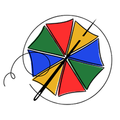
PERNAMBUCO ENTRELINHAS
Peças únicas criadas ponto a ponto para transformar histórias, afetos e momentos especiais em memórias bordadas.
Criado por mãos pernambucanas a viver em Portugal.
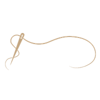
Quatro passos até o seu bordado
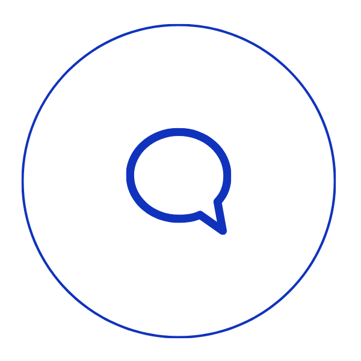
Conte-me a sua ideia, sentimento ou momento que deseja eternizar.
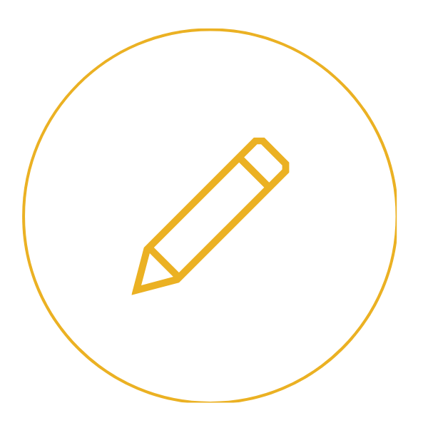
Crio um esboço do bordado para a sua aprovação antes de começar.
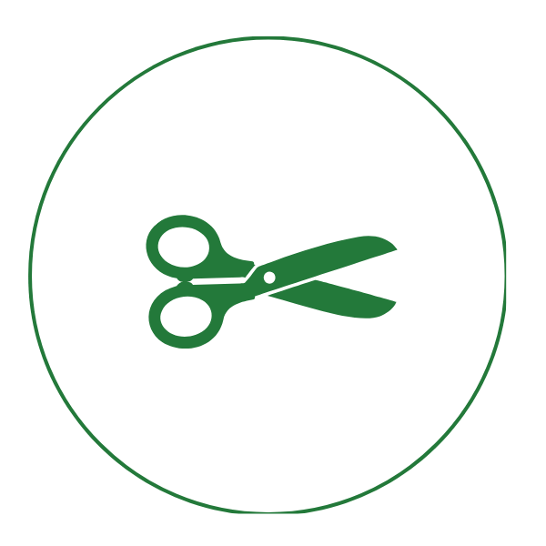
Bordo ponto a ponto, com cuidado e dedicação, até surgir a sua peça.
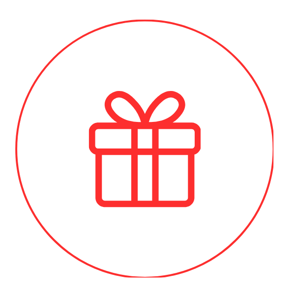
Recebe a sua peça embalada com carinho, pronta para encantar.
Porta-alianças e fitas de buquê personalizados, criados para acompanhar o casamento e permanecer depois dele.
A partir de 50 €Porta-maternidade, bastidores infantis e peças bordadas à mão para guardar a memória dos primeiros momentos.
A partir de 50 €Retratos e lugares especiais transformados em arte têxtil, com traços delicados e detalhes bordados ponto a ponto.
A partir de 60 €Joias bordadas à mão, leves e únicas, pensadas para carregar afeto, cor e história no dia a dia.
A partir de 25 €Cadernos de votos, álbuns e capas personalizadas para transformar palavras importantes em lembranças permanentes.
A partir de 100 €Quadros, chaveiros, ecobags, peças decorativas e outras criações bordadas especialmente para si.
Preço sob consultaO Pernambuco Entrelinhas nasceu do meu amor pelas minhas raízes, que está em tudo que faço, num momento em que eu precisava me reencontrar.
Criado por mãos pernambucanas a viver em Portugal, cada bordado carrega a vibração do Nordeste brasileiro — as cores do frevo, a força do maracatu, a delicadeza das rendas — entrelaçadas com a serenidade e a tradição artesanal portuguesa.
Aqui, cada ponto é um elo entre dois mundos, bordando memórias, afetos e identidade, unindo o calor de Pernambuco à suavidade de Portugal.
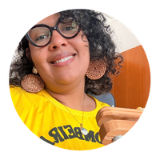
Me chamo Kitéria, mas pode me chamar de Kitty. Sou pernambucana, recifense, filha de uma mãe professora de profissão e costureira por amor, de um pai contabilista de profissão e artesão por amor — e deles herdei o meu amor pelas atividades manuais.
Moro em Portugal há 4 anos e volto ao Recife todo mês de fevereiro porque sou apaixonada pelo nosso Carnaval. ❤️
Por trás de cada bordado vai encontrar a curiosa, a criativa, a ansiosa, a metida a designer, a artesã, a bordadeira — todas apaixonadas pela arte e seus detalhes.
Peças únicas, feitas com alma
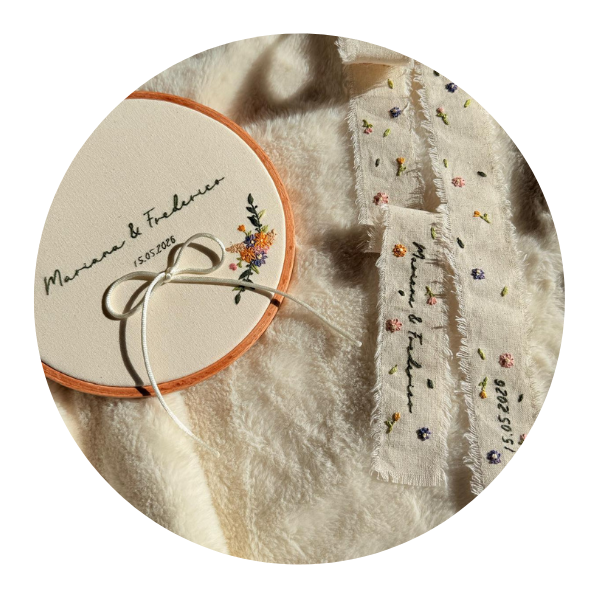
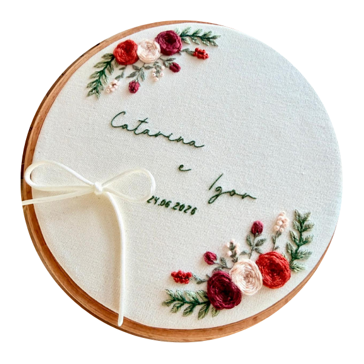
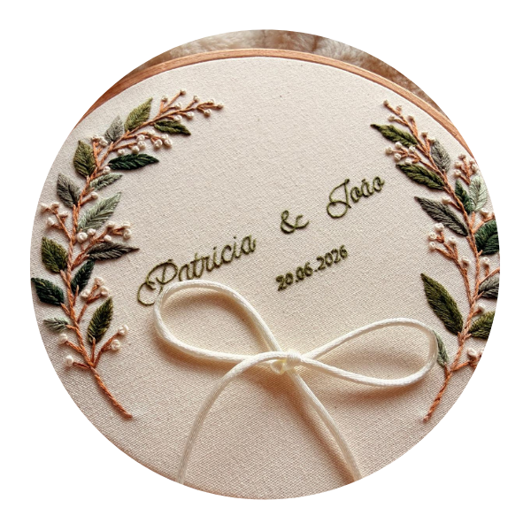
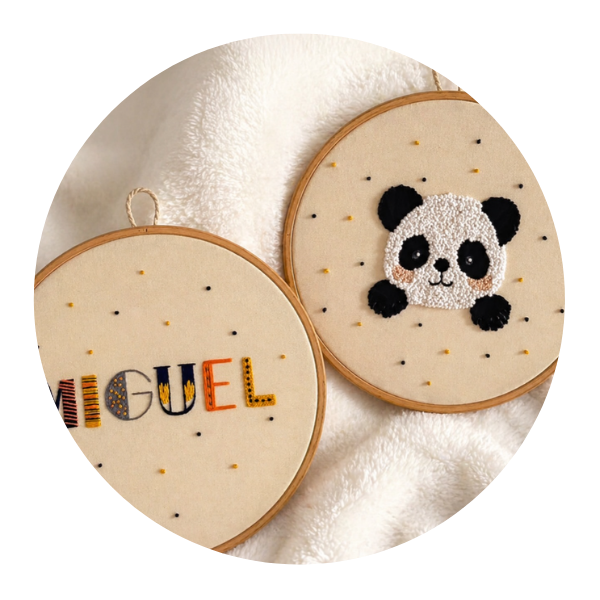
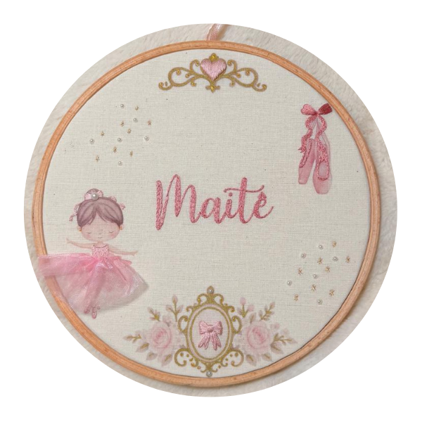
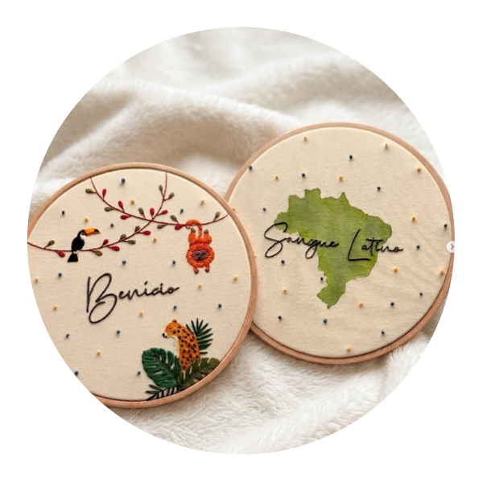
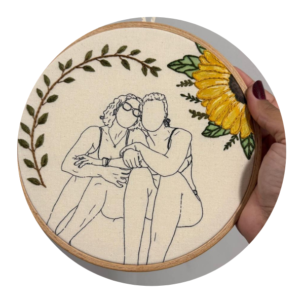
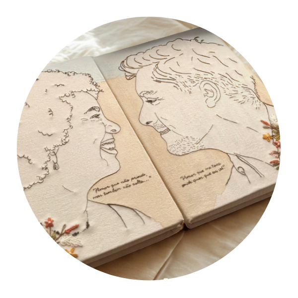
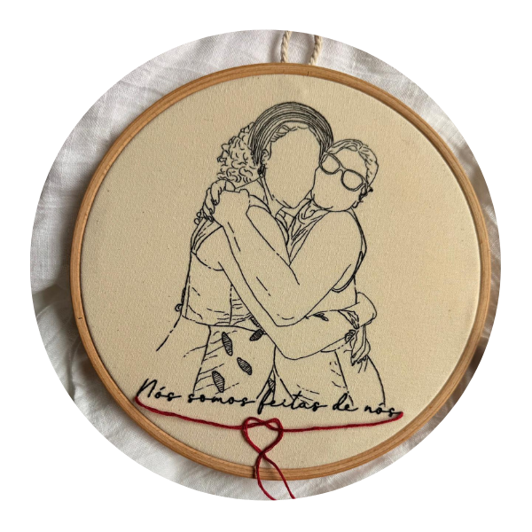
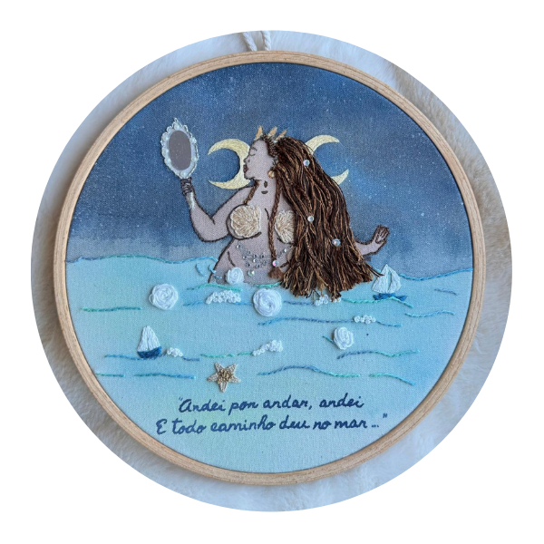
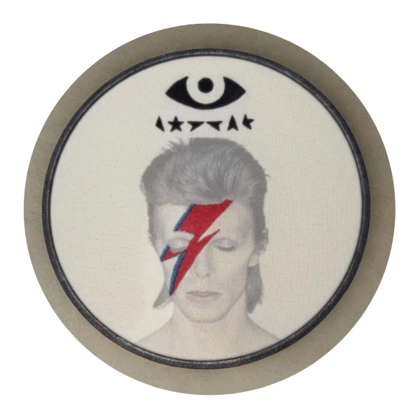
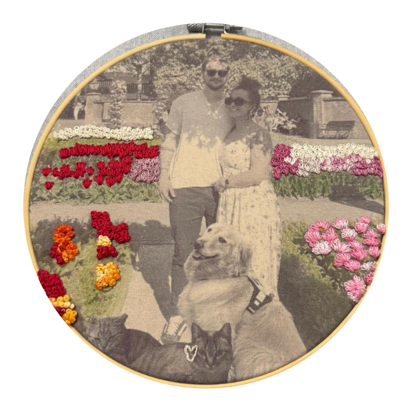
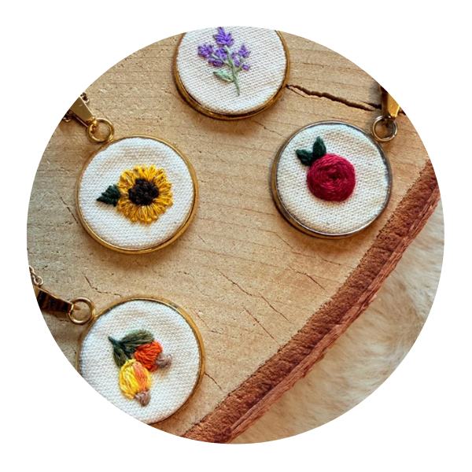
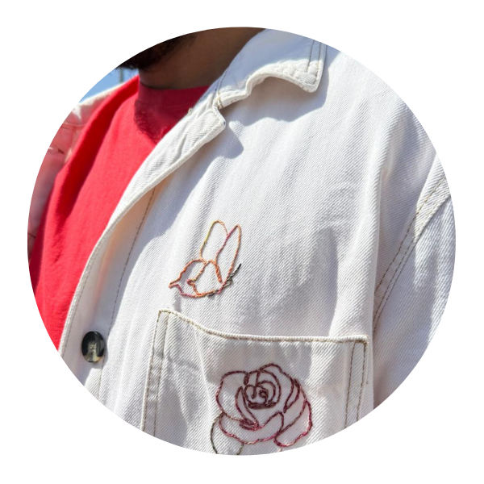
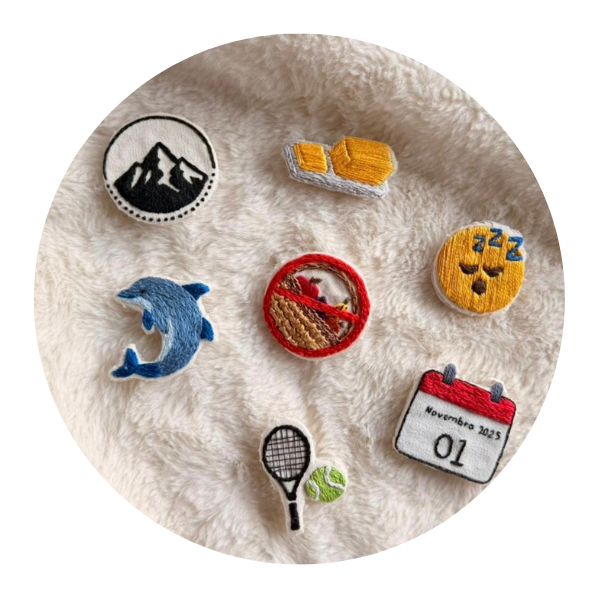